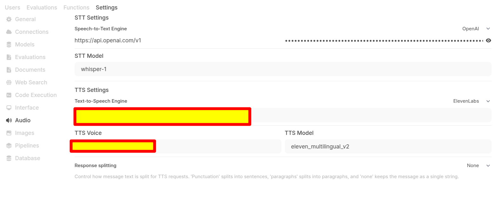
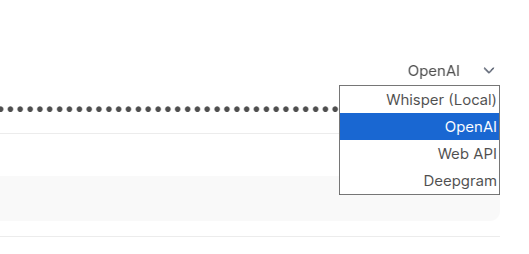
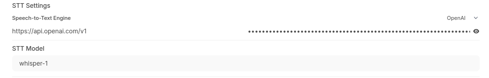
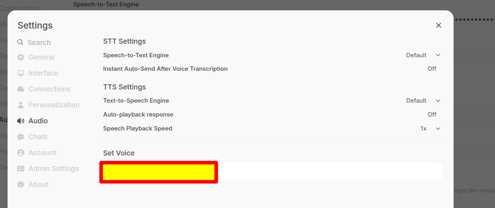
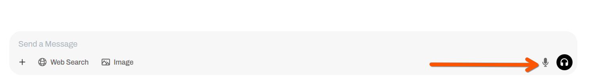
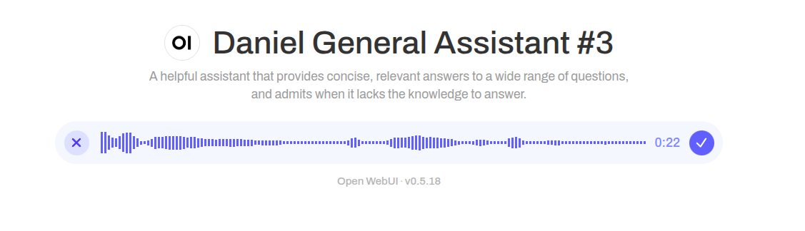
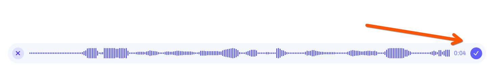

🗨️ Configuração
O Open Web UI suporta discurso local, navegador e remoto para o texto.


Discurso Remoto de Cloud / Processadores de Texto
Atualmente, o seguinte discurso em nuvem para provedores de texto é suportado. As teclas da API podem ser configuradas como variáveis ​​de ambiente (OpenAI) ou na página Configurações do administrador (ambas as teclas).
| Serviço | Chave da API necessária |
|---|---|
| Openai | |
| Deepgram |
O WebApi fornece STT através do provedor STT do navegador interno.
Configurando seu provedor STT
Para configurar um discurso para o provedor de texto:
- Navegue até as configurações do administrador
- Escolha áudio
- Provedor uma chave de API e escolha um modelo do menu suspenso

Configurações no nÃvel do usuário
Além disso, as configurações de instância provisionadas no painel de administração, também existem algumas configurações no nÃvel do usuário que podem fornecer funcionalidade adicional.
- Configurações STT:Contém configurações relacionadas à funcionalidade de fala para texto.
- Motor de fala para texto:Determina o mecanismo usado para reconhecimento de fala (API padrão ou da Web).

Usando STT
O discurso para o texto fornece uma maneira altamente eficiente de "escrever", utilizando sua voz e ele tem um desempenho robusto a partir de dispositivos de mesa e móveis.
Para usar o STT, basta clicar no Ãcone do microfone:

Uma forma de onda de áudio ao vivo indicará uma captura de voz bem -sucedida:

Operação do modo STT
Depois que sua gravação começar, você pode:
- Clique no Ãcone Tick para salvar a gravação (se o envio automático após a conclusão estiver ativado, ele será enviado para conclusão; caso contrário, você poderá enviar manualmente)
- Se você deseja abortar a gravação (por exemplo, você deseja iniciar uma nova gravação), pode clicar no Ãcone 'X' para analisar a interface de gravação
